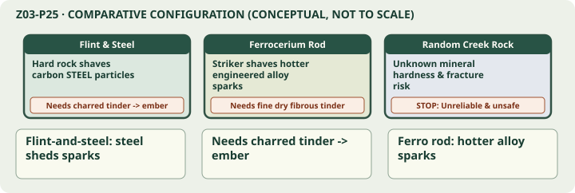

Z03-P25 · Fire and ignition · Adapted historical material
Distinguish traditional steel-and-flint sparks from ferrocerium sparks
Contrast the physics, spark temperature and tinder requirements of traditional flint-and-steel versus modern ferrocerium rods.
When it applies · Historical interpretation, mechanism education and supervised firecraft training.
Equipment · Identified traditional carbon-steel striker and flint/chert edge alongside a modern ferrocerium rod for cold comparison.

Actions
- In traditional flint-and-steel, a hard stone edge removes small steel particles. A compatible dry receiver, such as prepared char cloth used in the NPS demonstration, can catch them.[C10]
- Modern ferrocerium equipment differs in material and compatible striker. Use exact product instructions; this comparison does not establish relative spark temperature, duration or wet performance.[C10, ED]
- Keep historical flint-and-steel clearly classified as a skill-intensive educational or supervised heritage technique rather than substituting it for dependable modern emergency ignition.[C10, C11, C08]
Failure recognition · Assuming any random shiny rock from a creek bed sparks like a ferrocerium rod or expecting traditional steel sparks to light ordinary twigs directly.[C10, C03]
Verify · Explain clearly which material sheds the spark in each system and why charred tinder is required for traditional steel sparks.[C10, ED]
Stop or change course · Conduct first comparisons cold without live flame; require site authorization, eye caution against rock chips and ready water for any supervised live strike.[C01, C02, C10]
Evidence and editorial notes
- C01 · Minnesota DNR · Fire Danger and Burning Restrictions (current web edition; verify at use)
- Section: Fire danger and burning restrictions map and links · Conditions: Current Minnesota location, date and jurisdiction
Support: Check current restrictions and local authority requirements before lighting.
Limitations: Restrictions can change daily with humidity, wind, and drought; verify immediately before use. · Conflicting evidence: None; local jurisdiction always supersedes general notes.
Editorial note: Mandatory legal check before any live fire card. · Specialist reviewer: Fire prevention and local land management
Primary source · checked 2026-11-24 - C02 · USDA Forest Service / Smokey Bear · Smokey Bear’s Campfire Safety Guide (agency PDF)
- Section: Build your campfire; choose a location · Conditions: Where campfires are currently permitted
Support: Use an established fire ring where required or available. Protect the area from nearby combustible materials, avoid windy conditions and keep water ready.
Limitations: Site clearances vary by fuel load, slope, and wind; no universal safe radius fits all terrain. · Conflicting evidence: None; aligns with USFS-FIRE.
Editorial note: Grounds site-selection and ring-preparation procedures. · Specialist reviewer: Fire prevention and land management
Primary source · checked 2026-11-24 - C03 · USDA Forest Service / Smokey Bear · Smokey Bear’s Campfire Safety Guide (agency PDF)
- Section: Build your campfire > Tinder, kindling, fuel · Conditions: Outdoor authorized campfire
Support: Dry tinder, small kindling and larger fuel serve different roles. Gather materials before ignition. Avoid accelerants.
Limitations: Species availability and moisture content vary by season and local collection rules. · Conflicting evidence: None; separates material function from unverified species claims.
Editorial note: Used to stage three-tier fuel geometry without prescribing specific live trees. · Specialist reviewer: Fire prevention
Primary source · checked 2026-11-24 - C08 · NWS · What To Do If You're Caught in a Winter Storm (current web edition)
- Section: Outside > If there is no shelter nearby · Conditions: Stranded outdoors during a winter storm
Support: Seek shelter and block wind and wet exposure. Reduce heat loss from contact with snow or ground.
Limitations: Does not guarantee overnight survival without adequate insulation or rescue. · Conflicting evidence: None; reinforces no-fire exposure control priority.
Editorial note: Anchors no-fire fallback when ignition fails or is banned. · Specialist reviewer: Cold-weather shelter specialist
Primary source · checked 2026-11-24 - C10 · NPS · Flint and Steel at Pipe Spring National Monument (2015-02-24)
- Section: What > Firemaking with flint and steel · Conditions: Historical hard stone and suitable steel demonstration
Support: With traditional flint-and-steel, the flint removes small particles of steel that oxidize in air; a receptive tinder material catches the hot particles.
Limitations: Requires high-carbon steel and sharp hard rock (e.g., chert/flint); random unknown rocks fail and can fracture dangerously. · Conflicting evidence: Corrects common misconception that sparks come from the rock itself.
Editorial note: Used for mechanism diagrams and cold-inspection teaching cards. · Specialist reviewer: Fire prevention and materials mechanics
Primary source · checked 2026-11-24 - C11 · NPS · Ten Essentials (current web edition)
- Section: Fire and illumination · Conditions: Outdoor emergency kit
Support: Carry a dependable ignition option and protect it from moisture. Carry a separate light.
Limitations: Disposable butane lighters lose vapor pressure in freezing cold; matches fail when damp. · Conflicting evidence: None; supports redundant dry ignition kit planning.
Editorial note: Keeps lighting independent of fire-building. · Specialist reviewer: Field equipment and fire prevention
Primary source · checked 2026-11-24
Source lineage · B008/B010 and NPS Pipe Spring flint-and-steel; adapted historical material · Classification · Adapted historical material.